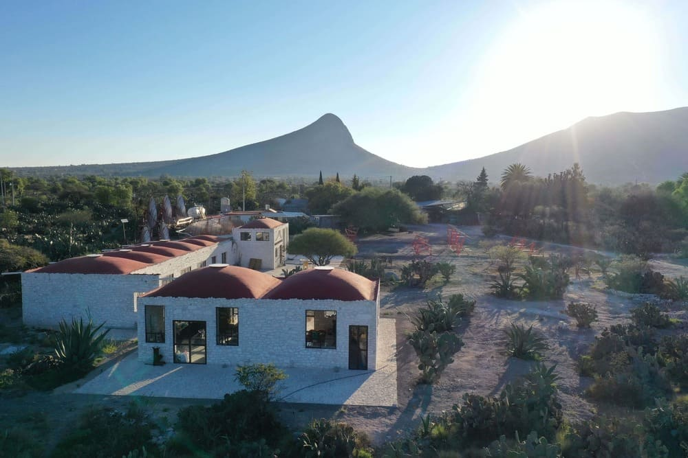
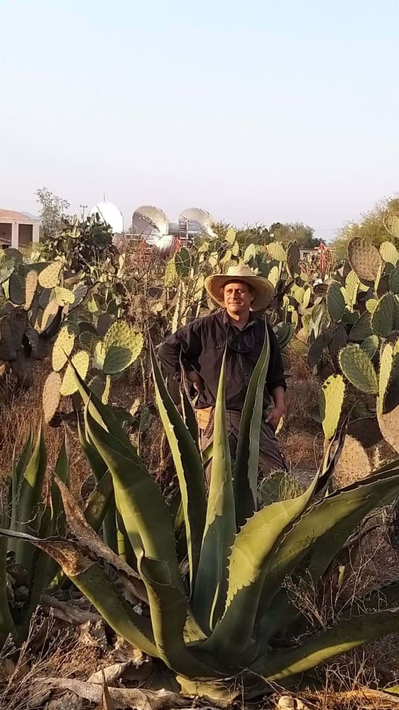
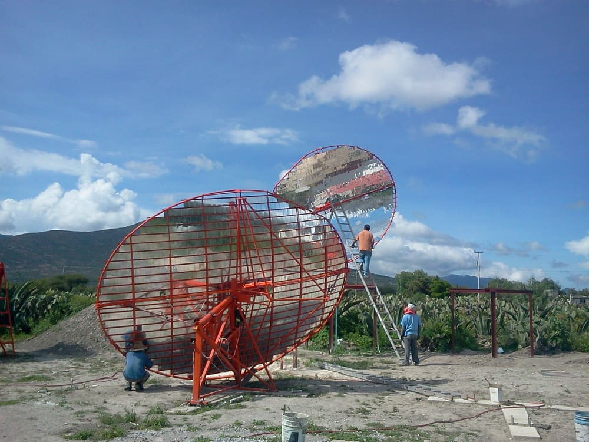
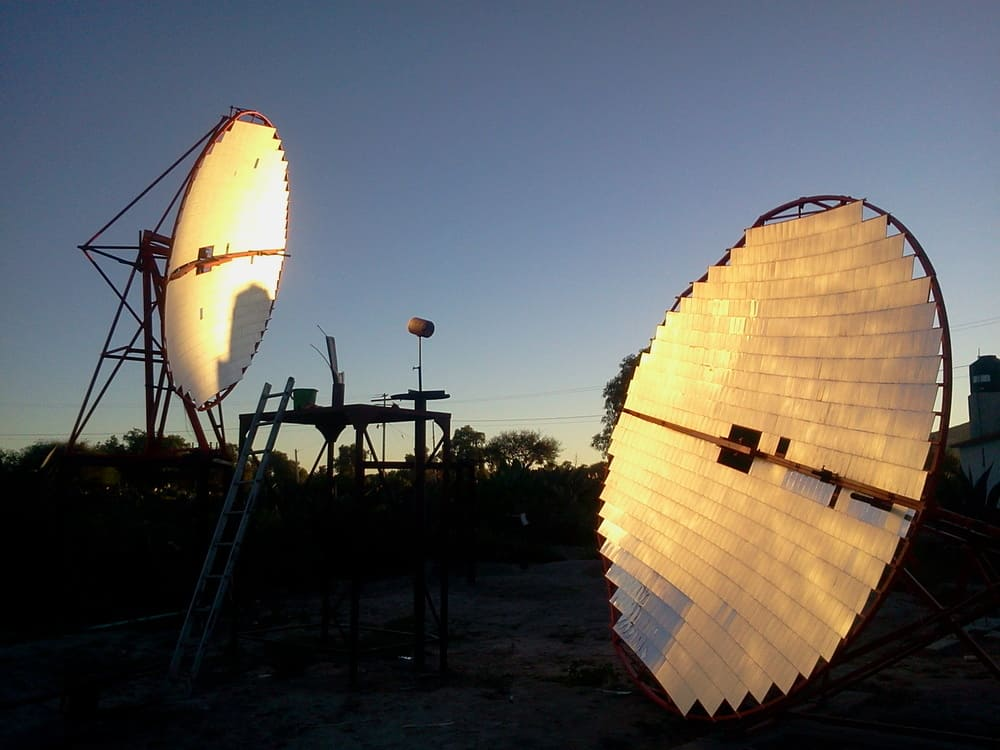
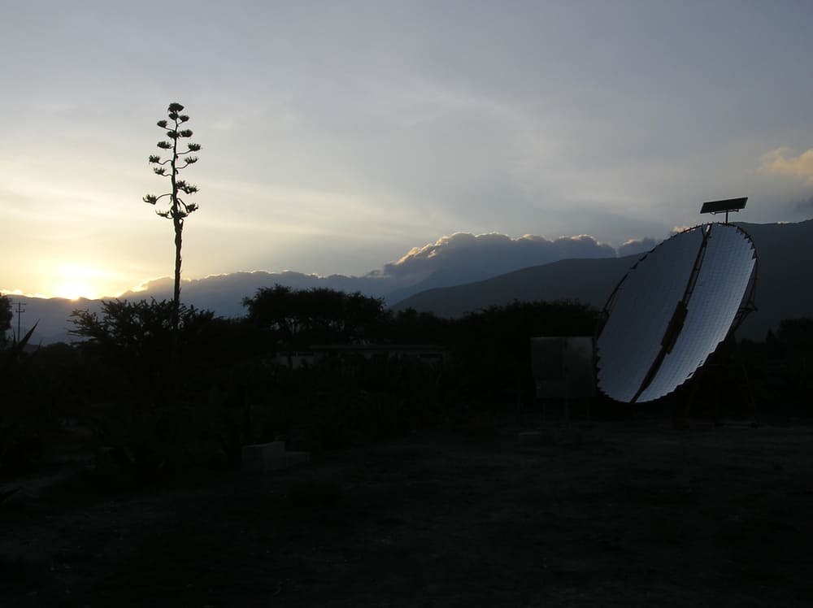
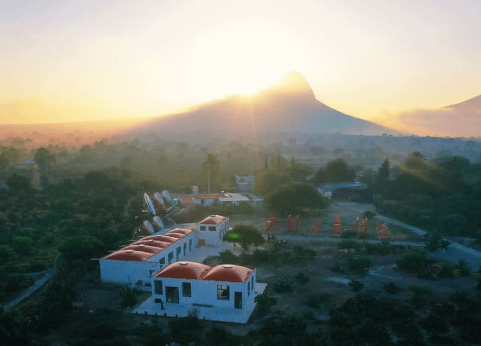
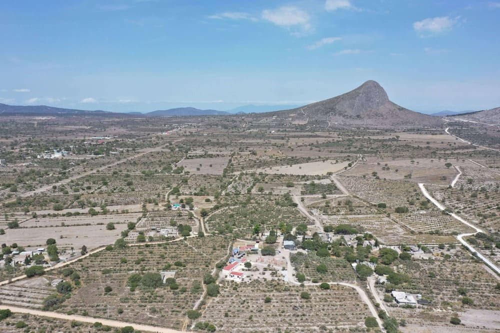
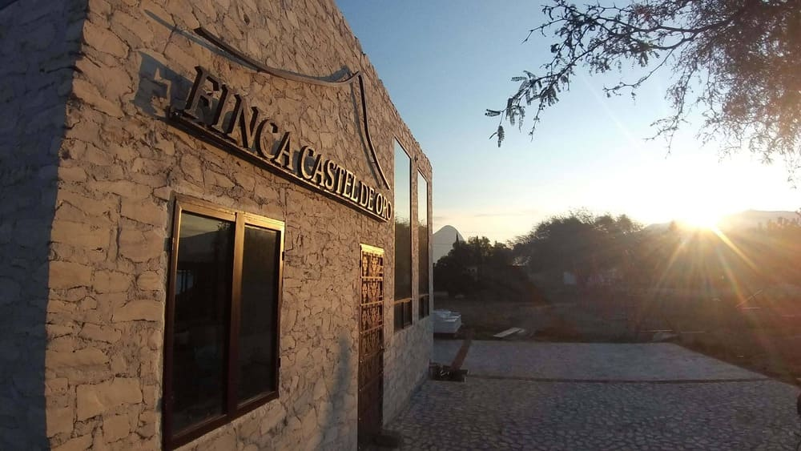

"Tradición no es la adoración de las cenizas sino la preservación del fuego vivo."
FINCA CASTEL DE ORO
Primera planta de destilación solar en el mundo

"Preservamos viva la agricultura Hñahñu del maguey y el nopal, única y especial en el mundo, produciendo alimentos y bebidas utilizando energía solar concentrada."
Para transformar los productos de la agricultura logramos instalar una planta de concentradores solares tipo Scheffler más grande de América.




Frente al emblemático cerro de El Fraile con energía solar concentrada generamos vapor solar para todos nuestros procesos de producción.
Agenda tu visita y conócenos
